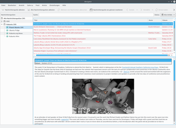
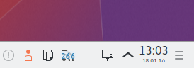

Akregator
Dieser Artikel wurde für die folgenden Ubuntu-Versionen getestet:
Ubuntu 16.04 Xenial Xerus
Ubuntu 14.04 Trusty Tahr
Zum Verständnis dieses Artikels sind folgende Seiten hilfreich:
Akregator  ist der Feedreader der KDE Desktopumgebung. Er ist Bestandteil von Kontact, dem Persönlichen Informations Manager des KDE-Desktops, kann aber auch als eigenständige Anwendung ausgeführt werden.
ist der Feedreader der KDE Desktopumgebung. Er ist Bestandteil von Kontact, dem Persönlichen Informations Manager des KDE-Desktops, kann aber auch als eigenständige Anwendung ausgeführt werden.
Akregator verfügt unter anderem über folgende Funktionen:
Anzeigeumschaltung zwischen Textzusammenfassung und HTML-Ansicht
Individuelle Feed-Einstellungen (Anzahl zu holender Nachrichten, Cache)
Einfache Organisation in Ordnern
Nachrichten archivieren
Suchfunktion
Nachrichtenquellen importieren und exportieren
Tabbed Browsing
HTTP-Authentifikation
Herunterladen und Abspielen von Audio- und Videoanhängen
AdBlock
Tray Icon
Installation¶
Akregator ist bei einer Kubuntu-Standardinstallation bereits enthalten und kann ansonsten über die Paketquellen installiert werden. Zur Installation [1] ist folgendes Paket notwendig:
akregator
 mit apturl
mit apturl
Paketliste zum Kopieren:
sudo apt-get install akregator
sudo aptitude install akregator
Nach der Installation kann Akregator als alleinstehendes Programm über das Menü "Internet → Nachrichtenbetrachter (Akregator)" gestartet werden.
Integration in Kontact¶
Zur Verwendung von Akregator innerhalb von Kontact muss in der Regel keine weitere Anpassung vorgenommen werden, das Programm wird automatisch integriert. Am linken Rand auf der Menüleiste von Kontact sollte standardmäßig die Schaltfläche "Nachrichten" vorhanden sein. Falls diese Schaltfläche fehlt, wurde dieses Modul deaktiviert. Zur Aktivierung des Moduls wählt man im Menü unter "Einstellungen → Kontact einrichten ...". Dort muss man in der Baumansicht auf der linken Seite einen Haken vor den Punkt "Nachrichten" setzen.
Benutzung¶
|  |
| Akregator als alleinstehendes Programm |
Feeds abonnieren¶
Feeds lassen sich bei Akregator über "Neue Nachrichtenquelle" abonnieren, nun muss noch die Adresse des Feeds eingegeben werden. Anschließend gibt man dem Feed einen Namen und kann Einstellungen vornehmen, sofern diese von den globalen Einstellungen abweichen sollen. Neben dem Rhythmus, in dem der Feed aktualisiert wird, kann auch eingestellt werden, ob über neue Artikel informiert werden soll und wie viele Artikel und wie lange sie aufbewahrt werden.
Feeds importieren¶
Gängige Browser bieten in der Regel die Möglichkeit, Nachrichten einer besuchten Webseite direkt in Akregator zu importieren. Beispielsweise zeigt rekonq (aber auch andere Browser) in der Adressleiste am rechten Rand ein RSS-Symbol, sofern auf einer besuchten Webseite Nachrichten zum Abonnieren angeboten werden. Bei anderen Browsern kann das Vorgehen unterschiedlich sein.
Konqueror¶
Konqueror arbeitet gut mit dem Akregator zusammen. Wenn man das Paket:
konq-plugins
mit apturl
Paketliste zum Kopieren:
sudo apt-get install konq-plugins
sudo aptitude install konq-plugins
installiert hat und im Konqueror unter "Einstellungen → Erweiterungen einrichten..." der Punkt "Symbol für RSS-Quellen in Konqueror" aktiviert ist, zeigt Konqueror bei Webseiten, die einen Feed anbieten, rechts unten in der Statusleiste ein Symbol an. Über dieses Symbol lassen sich Feeds innerhalb von Akregator abonnieren.
Browserfunktion¶
Akregator verfügt über rudimentäre Browserfunktionen. So öffnen sich Links standardmäßig innerhalb von Akregator in einem neuen Tab. Benötigt man mehr Funktionen als von Akregator geboten, klickt man mit einem Mittelklick auf den Link oder macht einen Rechtsklick auf den Tab und wählt "Unterfenster verselbständigen". Nun wird der Inhalt im externen Webbrowser geladen.
Konfiguration¶
Trayicon¶
|  |
| Akregator-Symbol im Systemabschnitt der Kontrollleiste |
Unter "Einstellungen → Akregator einrichten..." kann man durch Anhaken des Punktes "Symbol im Systembereich der Kontrollleiste anzeigen" das Trayicon aktivieren. Schließt man Akregator nun, bleibt das Trayicon bestehen. Wenn neue Nachrichten verfügbar sind, so erscheint eine Zahl auf dem Trayicon.
AdBlock¶
Akregator verfügt seit Version 5.2 (16.04) über die Möglichkeit Werbung in den RRS-Feeds auszublenden. Unter Akregator einrichten muss hierzu im Abschnitt AdBlock der Werbefilter aktiviert werden und ein Filter-Abonnement hinzugefügt werden. Für Feeds aus dem deutschsprachigen Raum eignet sich unter anderem die Liste EasyList Germany.
Ansicht¶
Akregator verfügt über drei verschiedene Ansichten, die "Normale Ansicht", eine "Breite Ansicht" für Widescreens sowie eine "Kombinierte Ansicht", zwischen denen unter "Ansicht" umgeschaltet werden kann. Bei jedem Ansichtsmodus befindet sich die Übersicht mit den Nachrichtenquellen im linken Drittel der Anzeige. Wählt man "Normale Ansicht", so befindet sich im rechten Bereich oben die Leiste mit den einzelnen Feeds und unten der Bereich, in dem der gewählte Feed angezeigt wird. Entscheidet man sich für die "Breite Ansicht", befindet sich die Leiste mit den Feeds links neben dem Feedbereich. In der "Kombinierten Ansicht" gibt es keine Feedleiste, sondern die einzelnen Feeds werden im Feedbereich chronologisch untereinander angezeigt.
Archiv migrieren¶
Wer ganze Artikel in seinem Newsticker aboniert hat und alle Nachrichten bei einer Migration behalten möchte, findet den Archiv-Ordner und die Einstellungen im Homeverzeichnis unter ~/.kde/share/apps/akregator/ bzw. seit Kubuntu 15.10 unter ~/.local/share/akregator/

- Erstellt mit Inyoka
-
 2004 – 2017 ubuntuusers.de • Einige Rechte vorbehalten
2004 – 2017 ubuntuusers.de • Einige Rechte vorbehalten
Lizenz • Kontakt • Datenschutz • Impressum • Serverstatus -
Serverhousing gespendet von